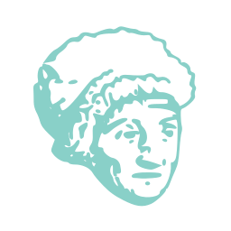
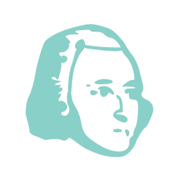
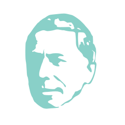
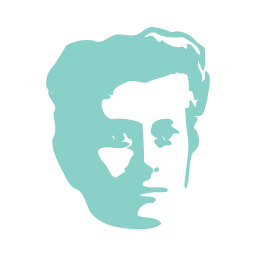
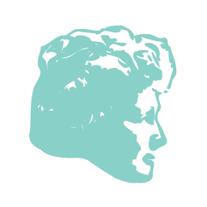
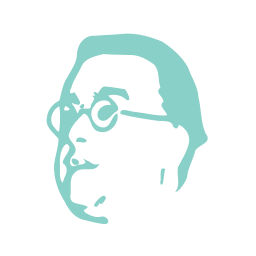
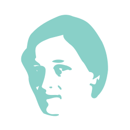
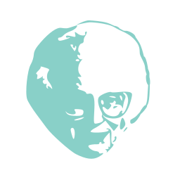
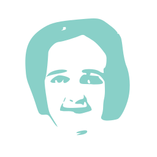

Unsung heroes of astronomy

Aristarchus of Samos
(310-230 BCE)
Greek astronomer who first proposed the Sun as the centre of the Solar System. He also suggested that the stars were other suns. He attempted to measure the relative distances of the Moon and Sun.

Thomas Harriot
(1560-1621)
English astronomer who was the first person to observe the Moon through a telescope.

Maria Margarethe Kirsch
(1670-1720)
German astronomer who studied the aurora borealis (northern lights), planetary conjunctions and created calendars. She was the first woman to discover a comet although the credit was taken by her husband. More...

Caroline Herschel
(1750-1848)
She was the first woman credited with the discovery of a comet in her own right. She discoverd eight comets. In 1787 she was paid a salary by King George III to work as an astronomical assistant. More...

John Goodricke
(1764-1786)
Dutch-English amateur astronomer proposed the concept of an eclipsing binary star to explain his observations of the star Algol.

Urbain Le Verrier
(1811-1877)
He studied perturbations in the orbit of Uranus. Using mathematics he determined that these were due to an unknown body and sent his predictions of its location to Johann Galle at the Berlin Observatory. Galle found the planet Neptune within an hour of starting to look.

Angelo Secchi
(1818-1878)
Italian astronomer who invented the heliospectrograph for studying the spectrum of light from the Sun. He proved that prominences observed during eclipses were part of the Sun. He also discovered three comets and was the first to describe "channels" (canali) on Mars.

Williamina Fleming
(1857-1911)
Scottish-American astronomer who discovered about 40% of the novae then known.

Annie Jump Cannon
(1863-1941)
American astronomer who created a classification scheme for stars that split them into the classes O, B, A, F, G, K, and M.

Henrietta Swan Leavitt
(1868-1921)
American astronomer who discovered Cepheid variable stars which provided a standard candle to measure the Universe.

Annie Scott Dill Maunder
(1868-1947)
Irish astronomer who worked at the Royal Observatory Greenwich observing the Sun. She was an expert in eclipse photography. Together with her husband she discovered the minimum in sunspot numbers now known as the 'Maunder Minimum'.

Georges Lemaître
(1894-1966)
Belgian cosmologist and priest who proposed the expansion of the Universe, first estimated the Hubble constant, and proposed that the Universe began with an explosion at a point in time. More...

Fritz Zwicky
(1898-1974)
Swiss astronomer who made contributions to many areas of astronomy. He found 123 supernovae and even helped coin the word for them. He predicted the existence of gravitational lenses due to galaxy clusters 42 years before the first one was found. He was also the first person to observe the effects of dark matter.

Celia Payne-Gaposchkin
(1900-1979)
As a 25 year old student, Payne's doctoral dissertation argued that the majority of the Sun, stars and the Universe was composed of hydrogen. Although initially dismissed, she was later shown to be correct.
Grote Reber
(1911-2002)
American who built the first parabolic dish radio telescope. He conducted the first radio sky map identifying the Milky Way in radio waves and discovering objects such as Cassiopeia A and Cynus A. More...

Ruby Payne-Scott
(1912-1981)
Australian astronomer who was the first female radio astronomer. She extensively studied the Sun and discovered various types of radio burst. She played a large part in the first ever radio interferometer. More...

Nancy Grace Roman
(1925-)
American astronomer who became NASA's first Chief of Astronomy. She oversaw the launch of three solar observatories and three astronomical satellites. She was involved in the early planning and design for the Hubble Space Telescope. More...

Beatrice Tinsley
(1941-1981)
A New Zealand astronomer who studied stars and galaxies. She completed her PhD at the University of Texas in only two years and her thesis was the basis for much of the subsequent study of the evolution of galaxies. During her career she worked on a huge range of topics.
{kind=link}
{kind=link}
{kind=link}
{kind=link}
{kind=link}
{kind=link}
{kind=link}
{kind=link}
{kind=link}
{kind=link}
{kind=link}
{kind=link}
{kind=link}
{kind=link}